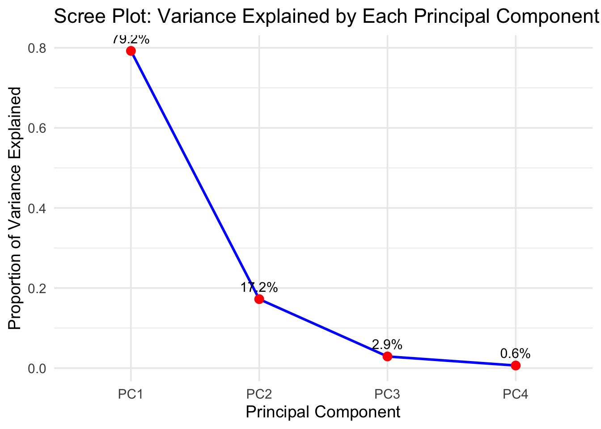
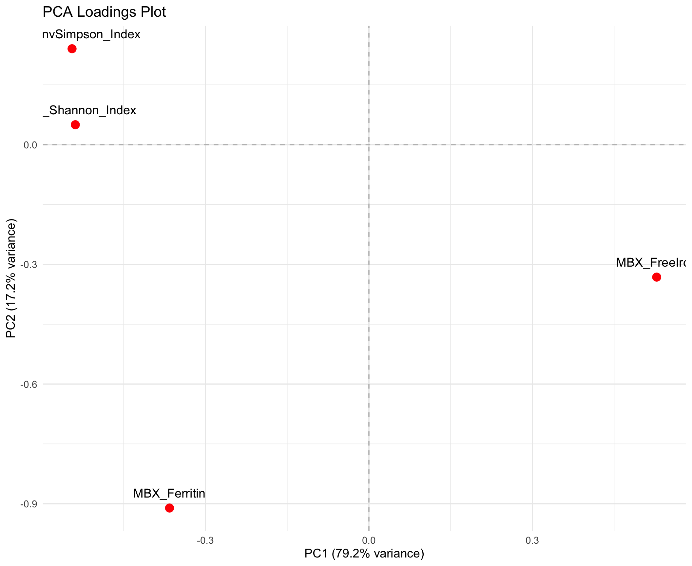
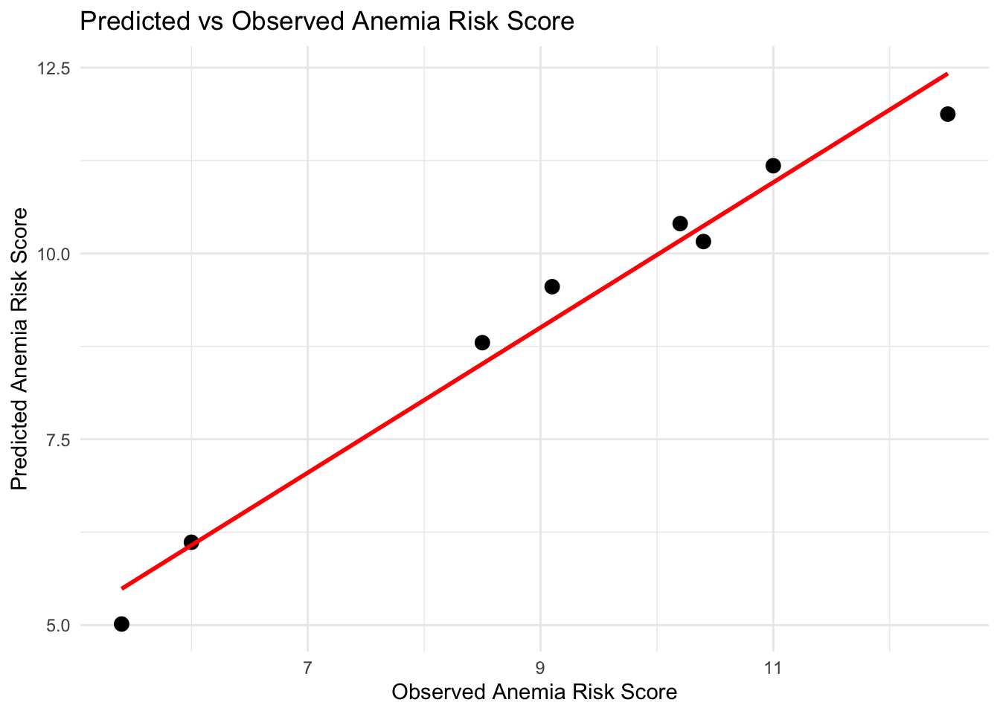
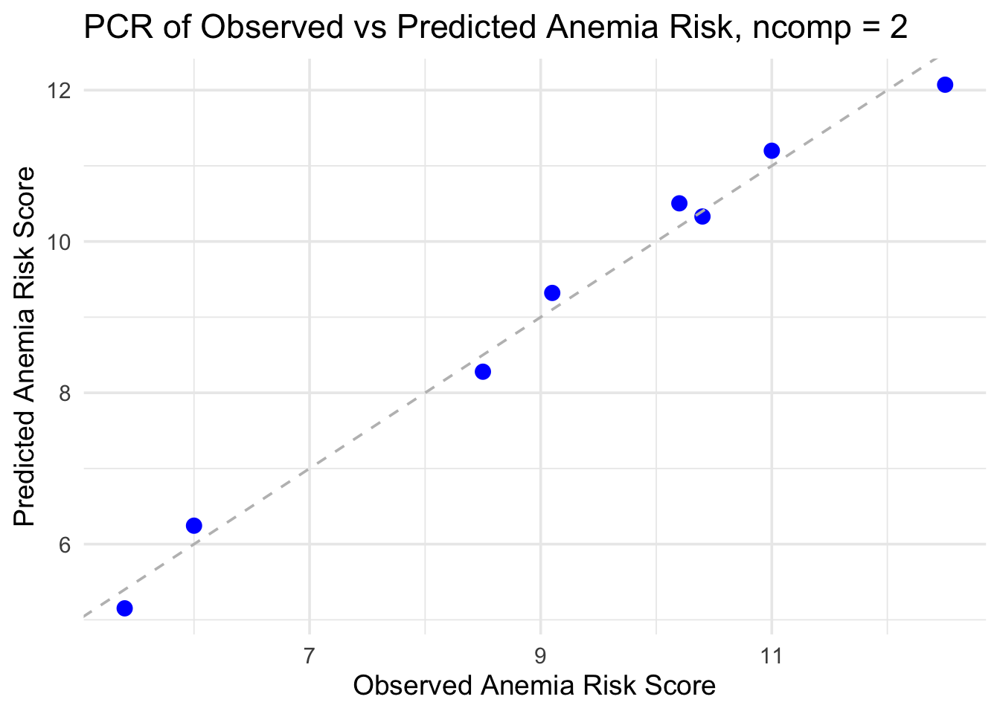
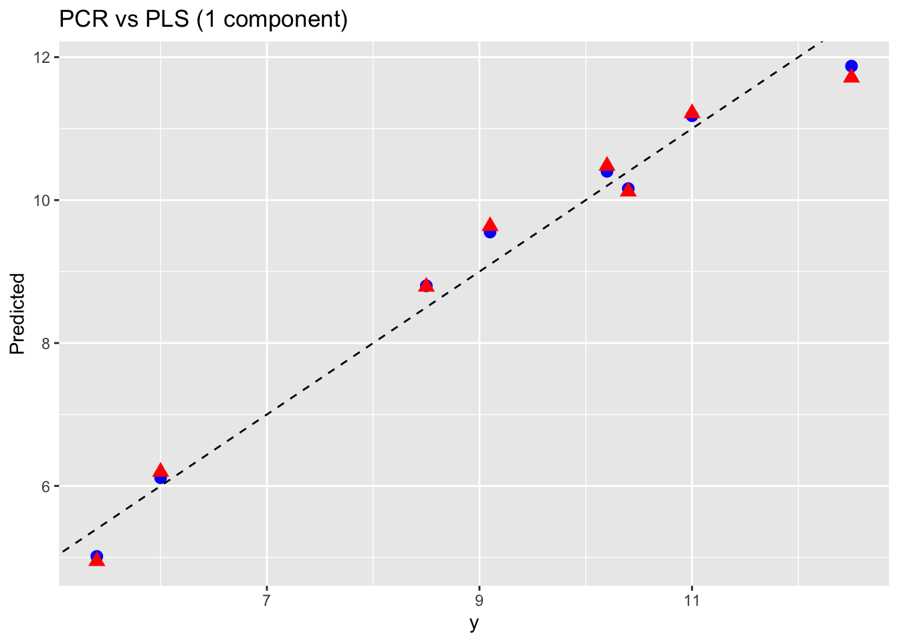

This is the first session of our Lab Learning Sessions series.
We’ll explore three related but different approaches:
PCA (Principal Component Analysis)
PCR (Principal Component Regression)
PLS (Partial Least Squares)
All methods use the same data matrix, but optimize different goals.
1.1 Learning Outcomes
Understand the objectives and math of PCA, PCR, and PLS.
Run each method on a toy dataset.
Visualize and compare results.
2 Preparing the environment
This notebook depends on a few R packages for plotting and linear algebra operations. The packages should have been installed during the initial rendering, but if not, run this code (only once!) to install the dependencies.
For this session, we’ll work with a toy dataset that mimics measurements from a pediatric integrated-omics study.
Each row represents a different child, and the columns combine microbiome diversity metrics with biomarkers of iron metabolism, along with a clinical outcome score.
Columns:
MGX_Shannon_Index Shannon diversity index estimated from metagenomic (MGX) profiles of the gut microbiome. Higher values → more diverse microbial community.
MGX_InvSimpson_Index Inverse Simpson diversity index from the same metagenomic profiles. Like Shannon, but more sensitive to dominant species.
MBX_FreeIron A simulated measure of free iron availability in the microbiome environment (MBX). Higher values suggest more free iron accessible to microbes.
MBX_Ferritin A proxy for ferritin-bound iron in the system. Represents stored iron, less directly available to microbes.
AnemiaRiskScore A synthetic clinical score reflecting risk of anemia (e.g., derived from hemoglobin, transferrin saturation, etc.). Higher values = higher risk.
4 Data
First, let’s assemble the original data, as it would be utilized as a starting point:
It’s crucial to differentiate and separate the exposures (input variables) and the outcomes (response variables) since the beginning, so let’s do that before we talk about analysis.
Tip
It is common to use capital letters (A, X) to denote data matrices (2D data) and small letters (b, y) to denote data vectors (1D)
X <- dat[, c("MGX_Shannon_Index", "MGX_InvSimpson_Index", "MBX_FreeIron", "MBX_Ferritin")]y <- dat[, "AnemiaRiskScore"]
5 Principal Component Analysis (PCA)
What is PCA?
PCA is a dimensionality reduction technique. It takes several correlated measurements (MGX_Shannon_Index, MGX_InvSimpson_Index, MBX_FreeIron,MBX_Ferritin) and rewrites them as a few new, uncorrelated Principal Components (PCs) that capture most of the variation in the data. This helps simplify datasets while preserving the essential information, which is especially helpful in machine learning where we work with large datasets.
How PCA works (follow along with your R notebook!)
To prepare our data for PCA, we have to center and scale the data matrix \(X\) that contains all our measured features so that every feature has an equal weight. This prevents one variable from skewing the analysis.
Code
X_scaled <-scale(X)
Once scaled, perform PCA:
Code
pca_result <-prcomp(X_scaled)
PCA uses Singular Value Decomposition (SVD) to break the data set into three parts. \[\tilde{X} = U \Sigma V^{\top}\]
Loadings: \(V\) tells us how each original variable contributes to each principal component
SVD essentially rotates and re-scales the dataset and then from those calculations, we get our Principal Components!
Visualizing Variance
To visualize how much the total variance in the dataset is explained by each principal component, we can construct a Scree plot by using the singular values.
Code
var_explained <- pca_result$sdev^2/sum(pca_result$sdev^2)pca_df <-data.frame(PC =paste0("PC", 1:length(var_explained)),Variance = var_explained)ggplot(pca_df, aes(x = PC, y = Variance, group =1)) +geom_line(color ="blue", linewidth =1) +geom_point(size =3, color ="red") +geom_text(aes(label =paste0(round(Variance *100, 1), "%")),vjust =-0.8, size =4) +labs(title ="Scree Plot: Variance Explained by Each Principal Component",x ="Principal Component",y ="Proportion of Variance Explained" ) +theme_minimal(base_size =14)

The first few bars usually capture most of the variance of our data. In our dataset, PC1 explains about 79% of the total variation, and PC2 adds another 17%. After that, the curve levels off, which means two components are enough to describe almost everything!
Visualizing Loadings
The loadings, \(V\), which represent the weights of each original variable in the linear comination that forms a principal component can be used to construct a loadings plot.
Code
# Extract the first two principal component loadingsloadings <-as.data.frame(pca_result$rotation[, 1:2])loadings$Variable <-rownames(pca_result$rotation)ggplot(loadings, aes(x = PC1, y = PC2, label = Variable)) +geom_point(size =4, color ="red") +geom_text(vjust =-1.2, size =5) +geom_hline(yintercept =0, linetype ="dashed", color ="gray") +geom_vline(xintercept =0, linetype ="dashed", color ="gray") +labs(title ="PCA Loadings Plot",x =paste0("PC1 (", round(summary(pca_result)$importance[2,1]*100, 1), "% variance)"),y =paste0("PC2 (", round(summary(pca_result)$importance[2,2]*100, 1), "% variance)") ) +theme_minimal(base_size =14)

This will help us visualize how the original features relate to the created Principal Components. Each point in the plot represents one of the original features, and its position indicates how strongly it contributes to the first two principal components. Variables that are close together have similar patterns across samples, while those that point in opposite directions are negatively correlated.
In our dataset, the Shannon and Inverse Simpson points cluster together, suggesting they capture similar information about microbiome diversity. Whereas FreeIron is negatively correlated to those two points and Ferritin is on a separate axis than the three points.
Visualizing PC Scores
We can also plot the Principal Component scores for each participant, where each point represents one pediatric participant’s profile based on their microbiome diversity and iron-related measurements. The color scale indicates the Anemia Risk Score, with warmer colors corresponding to higher risk.
Code
ggplot(scores, aes(x=PC1, y=PC2, color = y)) +geom_point(size=3)+scale_color_gradient(low="blue", high ="red")+labs(title ="PCA Scores of Samples Colored by Anemia Risk",x =paste0("PC1 (", round(summary(pca_result)$importance[2,1]*100, 1), "% variance)"),y =paste0("PC2 (", round(summary(pca_result)$importance[2,2]*100, 1), "% variance)"),color ="Anemia Risk" )+theme_minimal(base_size=14)
Participants that are close together have similar profiles, while those far apart are more different. The first principal component (PC1), which explains about 79% of the variance, appears to separate participants with higher anemia risk (red) from those with lower risk (blue)!
Why is PCA useful? With PCA, we were able to reduce our four correlated measurments(MGX_Shannon_Index, MGX_InvSimpson_Index, MBX_FreeIron,MBX_Ferritin), into just two components that capture nearly all of the information. This makes it much easier to visualize and interpret the relationships in the data and sets us up for sucess in PCR and PLS modeling! These will build on PCA to connect the two components to our outcome variable, Anemia Risk Score.
6 Principal Component Regression (PCR)
What is PCR?
PCR is a combination of PCA and multiple linear regression. PCR is typically used alternatively to multiple linear regression when there are a lot of variables or variables are correlated (1 variable affects the other).
It reduces the dimensionality of a dataset by projecting it into a lower-dimensional subspace– basically capturing the most important patterns and relationships in the data and only showing those.
PCR reduces dimensionality through principal components. These principal components (PCs) use singular value decomposition (SVD) of the covariance matrix to capture the most variance within the dataset. This ultimately summarizes the most important patterns and those PCs are used as the predictors within the regression model, instead of variables.
PCR first computes PCs of X, then regresses y on those PCs.
It’s a supervised step performed after the unsupervised PCA.
How do we do it in R? First we need to build the PCR model:
Code
pcr_model <-pcr(y ~ ., data = dat, scale =TRUE, validation ="LOO") #use pls package's pcr functionpred_vals <-predict(pcr_model) #get your predicted valuespredict_plot_df <-data.frame(Observed = y, Predicted = pred_vals[,1,1]) #make a new data frame with observed and predicted values
Using that, we then proceed to create a visualization of the regression in order to see how the anemia risk scores differ.
Code
predict_plot <-ggplot(predict_plot_df, aes(x = Observed, y = Predicted)) +geom_point(size =3) +geom_smooth(method ="lm", color ="red", se =FALSE) +theme_minimal() +labs(title ="Predicted vs Observed Anemia Risk Score",x ="Observed Anemia Risk Score",y ="Predicted Anemia Risk Score" )predict_plot

In the above plot, we have the predicted data points on the y-axis and the observed points on the x-axis. This gives us a visualization of the differences between the two anemia risk scores and we can see which components of the data have the most variance.
Why might we want to use principal component regression, or PCR? Let’s backtrack a bit to explore what PCR even is.
In our model, for example, we want to see how all of our variables are related to the Anemia risk. If we just had one variable, e.g. MBX_Ferritin, we would plot MBX_Ferritin on the x-axis, and the Anemia risk on the y-axis. We then draw a best-fit line through these points. Easy-peasy 2D graph! This is simple linear regression. Our final equation takes the form of: \[y = c + b1x\] where \(b\) is the slope of our best fit line.
How do we do this when we have multiple variables though?
We can use a technique called multilinear regression. Multilinear regression basically combines the simple linear regression for each of the variables performed separately. This means we plot Anemia risk against MBX_Ferritin, we plot Anemia risk against MBX_FreeIron, and so on for all of our variables.
Once we have the slopes of all our best fit lines, we have our multiple regression equation: \[y = c + b1x1+ b2x2 + b3x3 + b4x4 + …\]
where the \(x\)’s are our variables and the \(b\)’s are our associated slopes. This only really works if we know that there’s no relationship between each of our variables, though, and that’s really because of how we’re meant to interpret this regression.
When we look at each of the individual graphs for our multilinear regression– let’s say we want to see how ferritin levels affect anemia risk. We can assume that all of the other variables are being kept constant, allowing us to see how y changes if we ONLY change ferritin levels.
Let’s say we now want to see how free iron levels affect anemia risk.
Again, we assume all other variables remain constant.
Is that really accurate though? What if ferritin and free iron are correlated with each other? Let’s check:
We can see that ferritin and free iron are moderately negatively correlated to each other, with a correlation coefficient of approximately -0.4. This means that if keeping ferritin constant as we increase free iron wouldn’t really make sense, as in reality, ferritin levels decrease as we increase free iron, as displayed by our -0.4 correlation coefficient.
Ideally we want the variables that we compare our anemia risk to to be as independent as possible– meaning we want as little correlation between them as possible. Starting to sound familiar, maybe?
If you recall, we’ve actually already explored a tool for that– our principal components! Principal components summarize the relationships between our variables, and the best part about them is that we know that they’re all independent. We can thus compare each of our principal components to our anemia risk instead. Since our principal components are a ‘mixture’ of our variables like ferritin and free iron, they allow us to account for the relationship between ferritin and free iron.
What might this regression equation with a principal component, PC, look like? \[y = c1 (PC)\] where \(c1\) is the gradient of the line of best fit.
But… we don’t really want to see how anemia risk changes with the principal components. We still want to see how our anemia risk changes with our variables, we just want to account for the correlation between these variables.
Remember our loadings for the principal components? Just as a refresher– the loadings tell us what proportion of the principal component is made up by our different variables.
Let’s say ferritin is encoded by x1, and free iron by x2. Let’s assume for now that PC1 explains >90% of the relationship between ferritin and free iron, so including the other principal components wouldn’t make much difference. Let’s also assume for now that \[PC1 = 0.45 x1 - 0.25 x2\]
where 0.45 and -0.25 are the loadings for PC1. We know \[y = c1 PC1\] We can substitute PC1 with our variables, now that we know the relationship between PC1 and our variables: \[y = c1 (0.45 x1 - 0.25 x2)\]
If we expand this out, we get: \[y = (c1)(0.45) x1 + (c1)(-0.25) x2\]
These adjusted coefficients allow us to technically keep one of the variables constant to evaluate the other one, as we have, in a way, using the principal component, made them independent.
ggplot(results_2, aes(x = Observed, y = Predicted)) +geom_point(size =3, color ="blue") +geom_abline(slope =1, intercept =0, linetype ="dashed", color ="gray") +labs(title ="PCR of Observed vs Predicted Anemia Risk, ncomp = 2",x ="Observed Anemia Risk Score",y ="Predicted Anemia Risk Score" ) +theme_minimal(base_size =14)

7 Partial Least Squares (PLS)
Why use PLS if PCR is a perfectly adequate tool?
We can see that in our previous equation, our PC1 loadings are such that ferritin gets 0.45 and free iron gets -0.25. These are the values that allow our PC1 line to explain most of the patterns seen when comparing our independent variables, or, to put it more succinctly, they’re the values that maximize our variance. Our coefficient for x is determined significantly by our PC loading, but these loadings don’t really take our anemia risk into account.
This is all to say that looking at our loadings of 0.45 for ferritin (x1) and -0.25 for free iron (x2), it appears as though ferritin is more important in our prediction of anemia risk than free iron is, when that’s not really the case. PLS, while very similar to PCR, takes into account our dependent variable, anemia risk.
Similar to how we explained ferritin and free iron together using a principal component, we’ll now encode ferritin and free iron together, not in a principal component, but as a latent variable. Let’s refer to this latent variable as LV1. Much like what we did with PCR, we can form a regression equation as follows: y = c1 LV1
Building our PLS model
Code
pls_model <-plsr(AnemiaRiskScore~MGX_Shannon_Index+MGX_InvSimpson_Index+MBX_FreeIron+MBX_Ferritin, data = dat, scale =TRUE, validation ="LOO"); summary(pls_model)
Data: X dimension: 8 4
Y dimension: 8 1
Fit method: kernelpls
Number of components considered: 4
VALIDATION: RMSEP
Cross-validated using 8 leave-one-out segments.
(Intercept) 1 comps 2 comps 3 comps 4 comps
CV 2.61 0.6591 0.6017 0.6057 0.7118
adjCV 2.61 0.6421 0.5867 0.5850 0.6817
TRAINING: % variance explained
1 comps 2 comps 3 comps 4 comps
X 79.17 96.18 99.31 100.00
AnemiaRiskScore 96.56 98.01 98.63 98.75
ggsave("pls_graph_2.png", width =6, height =4, dpi =300)pls_loadings <-data.frame(pls_model$loading.weights[,1:2], var =rownames(pls_model$loading.weights))
Comparison of PCR and PLS Loadings
Code
pls_loadings <-data.frame(pls_model$loading.weights[,1:2], var =rownames(pls_model$loading.weights))pcr_loadings <-loadings(pcr_model)summary(pcr_loadings)
Comp 1 Comp 2 Comp 3 Comp 4
Min. :-0.4858 Min. :-0.190583 Min. :-0.2315 Min. :-0.657996
1st Qu.:-0.4801 1st Qu.:-0.122437 1st Qu.:-0.1898 1st Qu.:-0.595181
Median :-0.4746 Median :-0.007879 Median : 0.2134 Median :-0.281442
Mean :-0.2561 Mean : 0.178155 Mean : 0.2203 Mean :-0.231991
3rd Qu.:-0.3042 3rd Qu.: 0.278311 3rd Qu.: 0.5922 3rd Qu.: 0.009281
Max. : 0.4644 Max. : 0.933364 Max. : 0.7170 Max. : 0.365384
Comp 5
Min. :-0.49661
1st Qu.:-0.35655
Median :-0.04328
Mean :-0.01885
3rd Qu.: 0.01214
Max. : 0.79008
Code
summary(pls_loadings)
Comp.1 Comp.2 var
Min. :-0.53692 Min. :-0.94549 Length:4
1st Qu.: 0.09181 1st Qu.:-0.28626 Class :character
Median : 0.42797 Median : 0.06516 Mode :character
Mean : 0.21970 Mean :-0.14111
3rd Qu.: 0.55587 3rd Qu.: 0.21032
Max. : 0.55978 Max. : 0.25074
8 Comparing predictions by PCR and PLS
PCR → PCs ordered by variance in X
PLS → LVs ordered by covariance with y
Code
pcr_pred <-predict(pcr_model, ncomp =1)pls_pred <-predict(pls_model, ncomp =1)## Idea: let's vary the number of `ncomp` and see if they converge!pred_df <-data.frame(y = y,PCR =as.numeric(pcr_pred),PLS =as.numeric(pls_pred))library(gridExtra)p3 <-ggplot(pred_df, aes(x = y)) +geom_point(aes(y = PCR), color ="blue", size =3, shape =16) +geom_point(aes(y = PLS), color ="red", size =3, shape =17) +geom_abline(slope =1, intercept =0, linetype ="dashed") +ylab("Predicted") +ggtitle("PCR vs PLS (1 component)")p3

9 Summary Table
Aspect
PCA / PCR
PLS
Objective
Find new, uncorrelated components that explain variation in X
Find new components that explain variation in X and have the strongest relationship with outcome y
Reduced Components
Principal Compoments
Latent Variables
Uses y?
PCA: no, PCR: yes, after doing PCA
yes
Use case + Advice
When x is highly correlated ?
When you want to do prediction
10 Wrap-up
PCA: Unsupervised variance reduction of a dataset.
PCR: Supervised post-PCA - regresses on PCs.
PLS: Supervised, reduced components aligned with y.
Take-home message: Insert a take-home message here